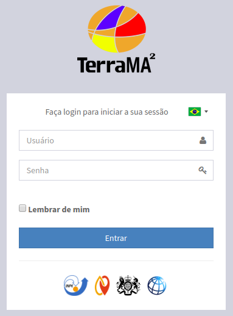
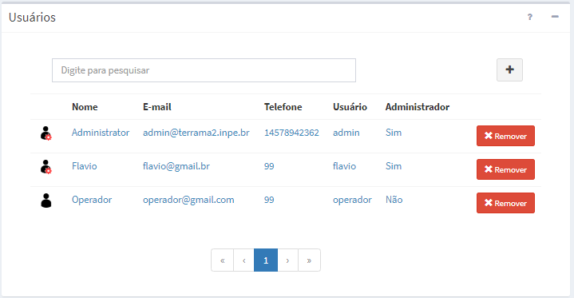

Usuários
Para acesso ao módulo de administração é necessária uma conta de um usuário. A plataforma TerraMA2 dispõe de dois tipos de usuários; usuário administrador e usuário não administrador. Para manipular as contas de usuário somente um com privilégio de administrador poderá fazer. Por default uma conta de administrador é criada na instalação da plataforma com as seguintes características:
- Usuário: admin
- Senha: admin
Importante: Em um ambiente corporativo com vários usuários recomendamos alterar a senha após o primeiro acesso no item Perfil do “Menu de trabalho”.
LOGIN DE USUÁRIO
Para acesso ao módulo de administração o usuário poderá fazer de uma máquina local (no mesmo computador onde está instalado e inicializado a plataforma) ou remota (em outro computador). Após a instalação da plataforma e todas as dependências (ver Manual de Instalação), abra o navegador de sua preferência e digite “http://localhost:36000” para acesso local. Para acesso remoto, consulte o administrador de sua rede para se informar do endereço a ser digitado. O navegador deverá apresentar a interface da Figura 2.2. Digite seu login e senha para ter acesso ao módulo de administração.

Figura 2.2 – Janela de Login de Usuário.
A Figura 2.3 mostra a lista de usuários disponíveis na área de trabalho quando o menu “ Administração” - “ Usuários” é selecionado. Caso a lista seja muito extensa poderá digitar um nome na caixa de texto “Digite para pesquisar” para encontrar um usuário específico.
Administração” - “ Usuários” é selecionado. Caso a lista seja muito extensa poderá digitar um nome na caixa de texto “Digite para pesquisar” para encontrar um usuário específico.

Figura 2.3 – Módulo de Administração: lista de usuários disponíveis.
As opções de manipulação de usuário são:
ADICIONAR UM USUÁRIO:
Para adicionar um novo usuário é necessário que um usuário com perfil de administrador esteja conectado. No menu “ Administração” escolha “
Administração” escolha “ Usuários” para a lista de usuários disponíveis ser apresentada na área de trabalho. Clique no botão “ + ” para adicionar novo usuário. Utilize o botão “Salvar” para salvar o usuário. Não é permitido nome de usuário em duplicidade. Botão “Cancelar” volta à tela anterior sem salvar o usuário. Detalhes de como adicionar um novo usuário veja aqui.
Usuários” para a lista de usuários disponíveis ser apresentada na área de trabalho. Clique no botão “ + ” para adicionar novo usuário. Utilize o botão “Salvar” para salvar o usuário. Não é permitido nome de usuário em duplicidade. Botão “Cancelar” volta à tela anterior sem salvar o usuário. Detalhes de como adicionar um novo usuário veja aqui.
REMOVENDO UM USUÁRIO:
Para remover um usuário somente um com privilégio de administrador poderá fazer. No menu “ Administração” clique “Usuários” para apresentar a lista de usuários disponíveis na área de trabalho. Na frente do nome do usuário clique em “Remover”. Clique o botão “OK” para confirmar remoção.
IMPORTANTE: Atenção ao remover um usuário pois todos os projetos desse serão removidos e não poderão ser recuperados. Se desejar ter uma cópia do projeto de um usuário que será removido, sugere-se exportar o projeto antes de realizar essa remoção.
EDITANDO PERFIL DO USUÁRIO:
Para editar os dados do usuário corrente, o mesmo deve estar conectado a plataforma. Clique no menu “ Perfil” para que os dados sejam apresentados na área de trabalho. Todos os campos podem alterados pelo usuário, menos o campo “Usuário”. Utilize o botão “Salvar” para salvar as alterações. Botão “Cancelar” volta à tela anterior sem salvar.
RECUPERANDO SENHA DE UM USUÁRIO:
Para recuperar a senha de um usuário, somente um administrador poderá fazer. Neste caso, uma nova senha temporária será fornecida para que o usuário altere posteriormente. No menu “ Administração” clique “ Usuários” para apresentar a lista de usuários disponíveis na área de trabalho. Clique sobre o nome de usuário desejado e nos campos “Senha: ” e “Confirmar Senha: ” digite o novo valor. Em seguida use o botão “Salvar” para confirmar atualização.
Administração” clique “ Usuários” para apresentar a lista de usuários disponíveis na área de trabalho. Clique sobre o nome de usuário desejado e nos campos “Senha: ” e “Confirmar Senha: ” digite o novo valor. Em seguida use o botão “Salvar” para confirmar atualização.